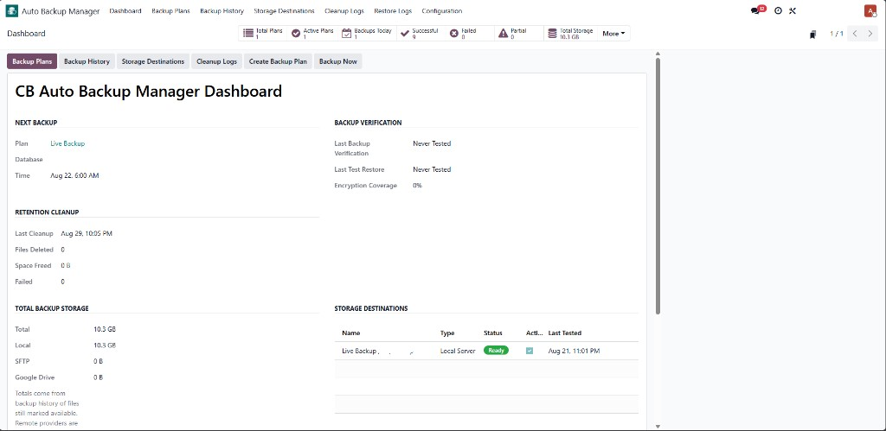
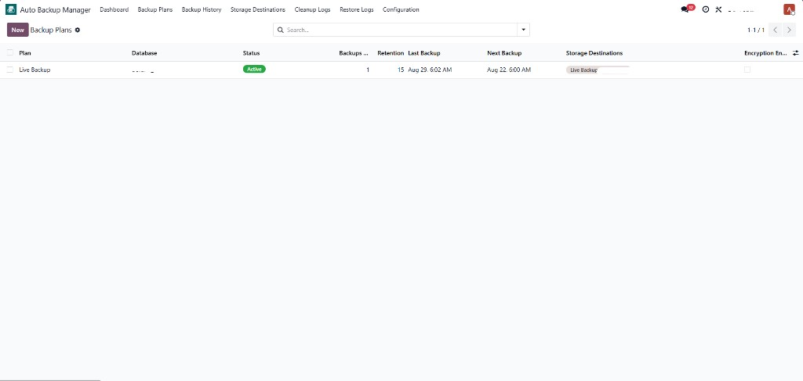
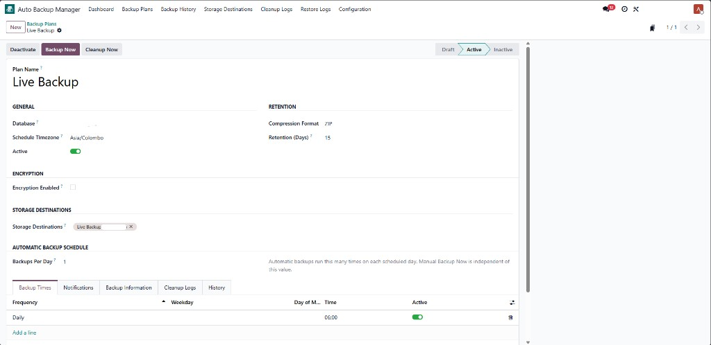
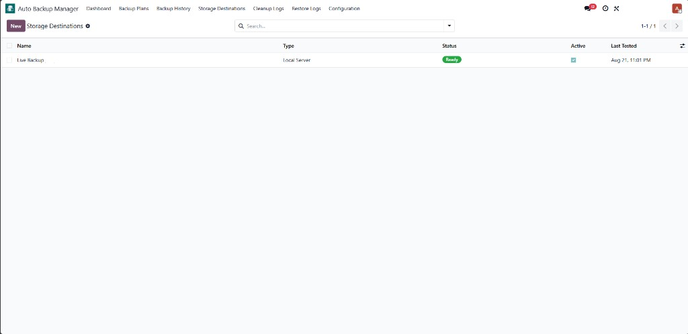
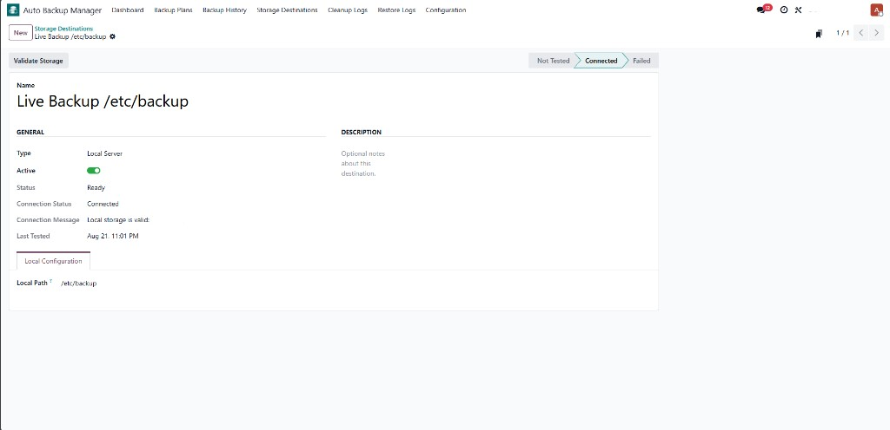
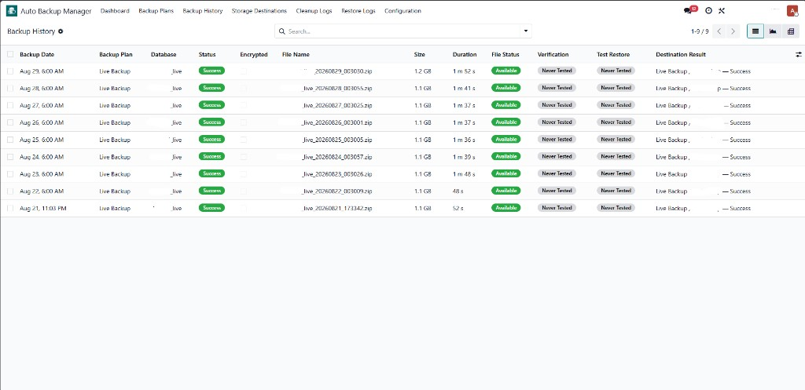
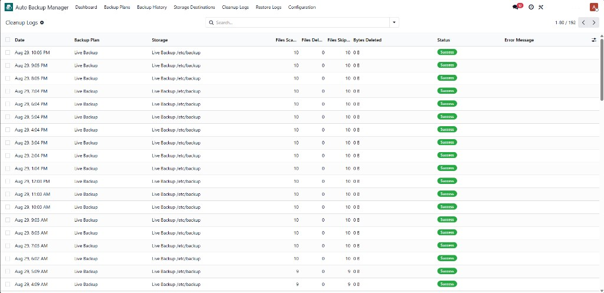
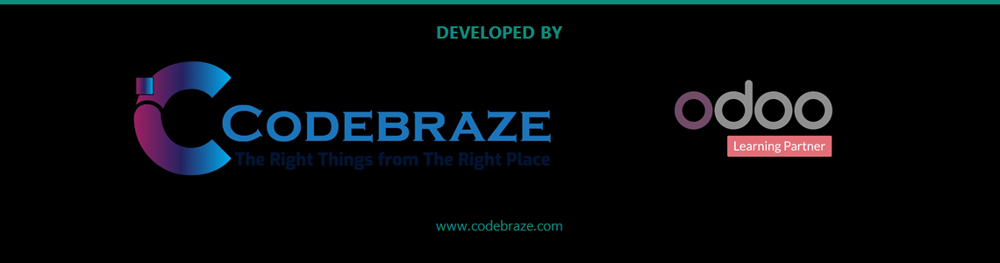

1. Monitoring dashboard
KPIs for plans, backups today, failures, storage totals, encryption coverage, next scheduled backup, and recent activity.

Screenshot: Dashboard with KPIs, today's backups, and storage destination status.

Schedule verified backups, deliver archives to multiple destinations, and test restores safely.
CB Auto Backup Manager backs up PostgreSQL databases and Odoo filestores on the same server. Backup Administrators define plans, schedules, retention, destinations, and optional AES-256 encryption — without overwriting the live database.
dump.sql + filestore) for Database Manager restoreKPIs for plans, backups today, failures, storage totals, encryption coverage, next scheduled backup, and recent activity.
Screenshot: Dashboard with KPIs, today's backups, and storage destination status.
Select the database, retention days, destinations, encryption profile, and backup times. Activate only after destinations validate successfully.

Screenshot: Backup Plans list — status, retention, destinations, and next run.

Screenshot: Active Backup Plan — destinations, retention, encryption, and Backup Times.
Local Server, SFTP (Paramiko with host-key verification), and Google Drive (OAuth + Drive API).

Screenshot: Storage Destinations list with connection status.

Screenshot: Local Server destination — path validation and Connected status.
Every run records checksums, destination results, duration, and status. Verify archives or restore into a temporary database — never the live production database.

Screenshot: Backup History — status, size, verification, test restore, and destinations.
Automatic and manual cleanup runs are audited with files scanned, deleted, skipped, and space freed.

Screenshot: Cleanup Logs — retention audit per plan and storage destination.
shell=True — PostgreSQL dumps use pg_dump safely
Requirements: Odoo 19, PostgreSQL with pg_dump,
Python paramiko for SFTP, Google Cloud OAuth client for Google Drive.
CodeBraze (PVT) Ltd
Website: https://www.codebraze.com
Email: info@codebraze.com
Odoo 19 · License OPL-1 · USD 9.99
